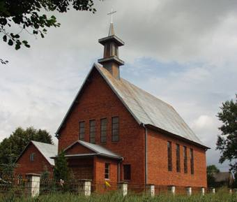

Kościół w Wadowicach Górnych. Najwcześniejsze źródła o osadnictwie w pobliżu Wadowic pochodzą z lat 1110-1117, zaś początki wsi z 1386 r. kiedy to król Władysław Jagiełło nadał ją wraz z innymi osadami Janowi z Tarnowa h. Leliwa. Parafię wydzieloną z okręgu parafialnego Książnice ufundował w 1458 r. Stanisław Tarnowski, kasztelan sądecki. Już z momentem powołania parafii w Wadowicach najprawdopodobniej istniała szkoła parafialna, która wzmiankowana jest w 1595 r. W latach 1561-70 parafia nie posiadała katolickiego duszpasterza. W tym czasie kościół zamieniony był na zbór protestancki aż do 1585 r. W tym roku parafię powtórnie ufundował Jan Gratus Tarnowski. Kościół parafialny p.w. św. Anny - zbudowano w Wadowicach Górnych w 1913 r. na miejscu poprzedniego drewnianego z XVIII w., który przeniesiony został do Jam. Z roku 1721 zachowała się wiadomość o tym kościele, który spełniał także funkcje obronne. Była to budowla drewniana, której obronność mogła polegać na utrudnionym do niej dostępie. Pierwszy kościół ufundował w 1585 r. Jan Tarnowski. Nowy kościół konsekrowano w 1925 r. Podczas działań wojennych 1944 r. został poważnie zniszczony i w latach 1945-48 odbudowany i odnowiony, zaś w roku 1957 odbudowano wieżę. Świątynia zbudowana jest z cegły, z użyciem kamienia i zachowuje cechy stylu neogotyckiego.
